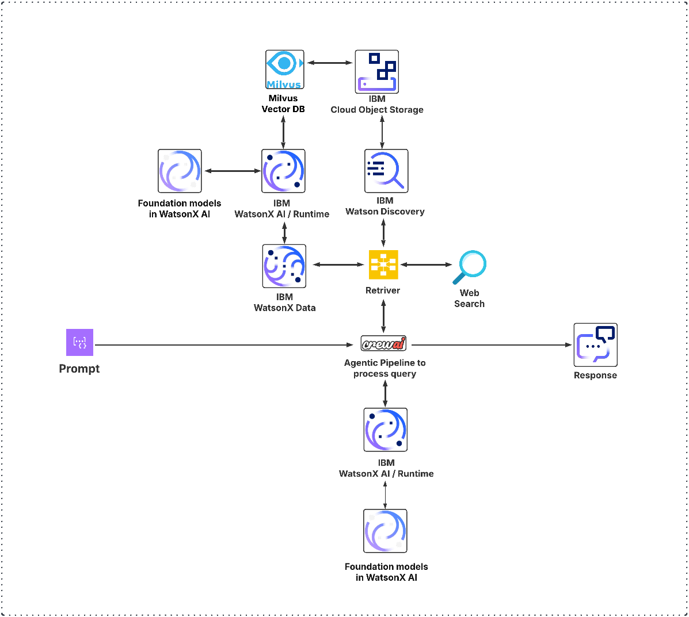

Learn how to build enterprise-grade multi-agent AI systems by integrating IBM WatsonX with CrewAI. This practical guide covers everything from technical integration to implementation of vector search with Milvus and document retrieval with Watson Discovery.
The enterprise AI landscape is rapidly evolving from single-model applications toward sophisticated multi-agent systems capable of tackling complex tasks through collaboration. This shift represents a fundamental change in how organizations approach AI problem-solving, with large language models (LLMs) now working together in coordinated systems rather than operating in isolation. Forward-thinking enterprises are increasingly seeking ways to implement these collaborative AI frameworks to automate complex workflows, enhance decision-making processes, and maximize the value of their AI investments.
In October 2024, IBM announced a strategic partnership with CrewAI, integrating CrewAI's multi-agent orchestration capabilities with IBM's enterprise-grade foundation models. This collaboration promises to transform how organizations manage AI-driven workflows by combining IBM's robust AI security and scalability with CrewAI's innovative approach to agent collaboration.
Despite the growing interest in this integration, technical resources showing developers how to effectively connect these platforms remain limited. This guide aims to fill that gap by providing a comprehensive, practical approach to integrating IBM WatsonX GenAI stack with CrewAI.
For enterprise AI applications, this integration delivers significant advantages. Organizations can build sophisticated agent-based systems that leverage IBM's security, scalability, and compliance features while benefiting from CrewAI's flexible orchestration framework. This enables businesses to automate complex workflows that were previously too nuanced for traditional automation approaches.
By the end of this guide, you'll have all the knowledge needed to build sophisticated, enterprise-grade AI agent systems using IBM WatsonX and CrewAI together.
CrewAI introduces the concept of "crews" - teams of AI agents working collaboratively toward common goals. Each agent within a crew operates with a specialized role, defined goals, and a backstory that shapes its approach to tasks.
The framework consists of four main components:
Unlike using a single general-purpose LLM for everything, CrewAI's role-based agents excel at specific functions: researchers gather information, analysts process data, writers craft content, and so on. This specialization allows each agent to develop expertise in its domain while working as part of a coordinated team.
The orchestration of these agents follows clear workflow patterns:
IBM WatsonX provides a comprehensive AI platform designed for enterprise needs, offering several key advantages for multi-agent systems:
IBM's foundation model lineup includes several powerful options. Refer to this link for latest supported models:
What distinguishes IBM's offering is its enterprise-ready infrastructure featuring:
These features make WatsonX particularly suitable for sensitive enterprise applications where reliability and security are paramount.
For enterprise AI applications, this integration delivers significant advantages. Organizations can build sophisticated agent-based systems that leverage IBM's security, scalability, and compliance features while benefiting from CrewAI's flexible orchestration framework. This enables businesses to automate complex workflows that were previously too nuanced for traditional automation approaches.
LiteLLM serves as a crucial intermediary between CrewAI and various LLM providers, including IBM WatsonX. It provides a standardized interface that abstracts away the differences in API specifications, making it possible to use multiple models from different providers with minimal code changes.
While CrewAI can use IBM WatsonX models directly, LiteLLM offers several advantages:
To connect CrewAI with IBM WatsonX through LiteLLM, we'll create a specialized service class that handles the communication:
import logging
import time
import os
from typing import List, Dict, Any, Optional
import litellm
from litellm import completion
class LiteLLMWatsonxService:
"""Service for interacting with WatsonX through LiteLLM."""
def __init__(self):
"""Initialize the LiteLLM WatsonX service."""
# Set up WatsonX configuration
self.watsonx_config = {
"model": "watsonx/meta-llama/llama-3-3-70b-instruct",
"api_base": os.getenv("WATSONX_URL"),
"api_key": os.getenv("WATSONX_APIKEY"),
"api_version": os.getenv("WATSONX_VERSION", "2024-05-01"),
"project_id": os.getenv("WATSONX_PROJECT_ID")
}
# Rate limiting configuration
self.last_api_call = 0
self.min_call_interval = 0.5 # Minimum time between API calls in seconds
def _respect_rate_limit(self):
"""Ensure we don't exceed rate limits for the API."""
current_time = time.time()
time_since_last_call = current_time - self.last_api_call
if time_since_last_call < self.min_call_interval:
sleep_time = self.min_call_interval - time_since_last_call
time.sleep(sleep_time)
self.last_api_call = time.time()
def generate_text(self, prompt: str, model: Optional[str] = None,
temperature: float = 0.7, max_tokens: int = 1000) -> str:
"""Generate text using WatsonX through LiteLLM.
Args:
prompt: The text prompt to send to the model
model: Optional model override (defaults to config model)
temperature: Control randomness (0-1)
max_tokens: Maximum number of tokens to generate
Returns:
Generated text as string
"""
self._respect_rate_limit()
try:
response = completion(
model=model or self.watsonx_config["model"],
messages=[{"role": "user", "content": prompt}],
temperature=temperature,
max_tokens=max_tokens,
api_base=self.watsonx_config["api_base"],
api_key=self.watsonx_config["api_key"],
api_version=self.watsonx_config["api_version"],
project_id=self.watsonx_config["project_id"]
)
return response.choices[0].message.content
except Exception as e:
logging.error(f"Error generating text: {e}")
raise
def generate_chat_completion(self, messages: List[Dict[str, str]],
model: Optional[str] = None,
temperature: float = 0.7,
max_tokens: int = 1000) -> Dict[str, Any]:
"""Generate a chat completion using WatsonX through LiteLLM.
Args:
messages: List of message dictionaries with 'role' and 'content'
model: Optional model override (defaults to config model)
temperature: Control randomness (0-1)
max_tokens: Maximum number of tokens to generate
Returns:
Complete response object from the API
"""
self._respect_rate_limit()
try:
response = completion(
model=model or self.watsonx_config["model"],
messages=messages,
temperature=temperature,
max_tokens=max_tokens,
api_base=self.watsonx_config["api_base"],
api_key=self.watsonx_config["api_key"],
api_version=self.watsonx_config["api_version"],
project_id=self.watsonx_config["project_id"]
)
return response
except Exception as e:
logging.error(f"Error generating chat completion: {e}")
raise
What this means: This service class provides two main methods for generating text with IBM WatsonX models:
generate_text() - For simple text generation from a promptgenerate_chat_completion() - For more complex chat-based interactionsThe class handles rate limiting automatically and uses environment variables for authentication.
This service requires setting up environment variables for authentication:
# .env file
WATSONX_URL=https://us-south.ml.cloud.ibm.com
WATSONX_APIKEY=your_watsonx_api_key
WATSONX_PROJECT_ID=your_watsonx_project_id
WATSONX_VERSION=2024-05-01 # Optional, defaults to this value
CrewAI's built-in LLM class serves as a wrapper around LiteLLM to provide a seamless integration with various model providers. Here's what happens under the hood when an agent makes a call to a language model:
When an agent needs to perform a reasoning task or generate content, it follows this process:
llm = LLM(
model="watsonx/meta-llama/llama-3-3-70b-instruct",
api_base=os.getenv("WATSONX_URL"),
api_key=os.getenv("WATSONX_APIKEY"),
project_id=os.getenv("WATSONX_PROJECT_ID"),
temperature=0.7
)
response = agent.llm.call(prompt)
Inside the LLM class, several steps occur:
messages = [
{"role": "system", "content": system_prompt},
{"role": "user", "content": user_prompt}
]
completion_options = {
"model": self.model,
"temperature": self.temperature,
"max_tokens": self.max_tokens,
"api_base": self.api_base,
"api_key": self.api_key,
"project_id": self.project_id
}
response = litellm.completion(
messages=messages,
**completion_options
)
LiteLLM examines the model name to determine the appropriate provider:
# Inside LiteLLM (simplified)
headers = {
"Authorization": f"Bearer {api_key}",
"Content-Type": "application/json"
}
payload = {
"model_id": model_name.replace("watsonx/", ""),
"project_id": project_id,
"inputs": [format_prompt(messages)],
"parameters": {
"temperature": temperature,
"max_new_tokens": max_tokens,
# Other parameters
}
}
Once the API responds, the data flows back through the same chain:
This multi-layered approach allows CrewAI to seamlessly work with IBM WatsonX models while abstracting away the complexities of direct API integration. The use of LiteLLM as an intermediary provides flexibility, standardization, and enhanced error handling capabilities.
To get started with the integration, you'll need to install the required packages. Create a requirements.txt file with the following dependencies:
# Core dependencies
crewai>=0.114.0
litellm>=1.60.0
pydantic>=2.11.0
python-dotenv>=1.1.0
pyyaml>=6.0
# IBM WatsonX specific
ibm-watsonx-ai>=1.3.0
ibm-watson>=9.0.0
ibm-cloud-sdk-core>=3.23.0
# Optional dependencies (uncomment as needed)
# pymilvus>=2.5.0 # For vector database integration
Install the dependencies with pip:
pip install -r requirements.txt
A maintainable approach for configuring CrewAI systems is to use YAML configuration files. This approach separates configuration from code and makes it easier to manage agent-based systems.
Let's start with a straightforward multi-agent configuration that demonstrates a research and writing workflow:
# agents.yaml - Simple multi-agent configuration
researcher:
role: Research Specialist
goal: Find accurate information on specific topics.
backstory: You are an expert researcher with extensive knowledge in various fields.
llm: watsonx/meta-llama/llama-3-3-70b-instruct
temperature: 0.2
verbose: true
writer:
role: Content Writer
goal: Create engaging content based on research.
backstory: You specialize in transforming information into clear, engaging content.
llm: watsonx/ibm/granite-3-3-8b-instruct
temperature: 0.7
verbose: true
This configuration defines two specialized agents:
For tasks, we define a simple workflow where research results feed into content creation:
# tasks.yaml - Corresponding tasks for our agents
research_task:
description: Research the topic "{topic}" and gather key information from reliable sources.
expected_output: A summary of key findings about the topic.
agent: researcher
async_execution: false
writing_task:
description: Create an engaging article about "{topic}" based on the research findings.
expected_output: A well-structured article for a general audience.
agent: writer
async_execution: false
context: [research_task] # This links the writing task to use research results
Here's how to load these configurations and run a multi-agent crew:
import yaml
import os
from crewai import Agent, Task, Crew, Process, LLM
from dotenv import load_dotenv
# Load environment variables
load_dotenv()
def load_agents_from_yaml(yaml_path):
"""Load multiple agents from YAML configuration."""
with open(yaml_path, 'r') as file:
agents_config = yaml.safe_load(file)
agents = {}
for agent_name, config in agents_config.items():
# Configure LLM if specified in YAML
llm = None
if "llm" in config:
llm = LLM(
model=config["llm"],
api_base=os.getenv("WATSONX_URL"),
api_key=os.getenv("WATSONX_APIKEY"),
project_id=os.getenv("WATSONX_PROJECT_ID"),
temperature=config.get("temperature", 0.7)
)
# Create agent
agents[agent_name] = Agent(
role=config["role"],
goal=config["goal"],
backstory=config["backstory"],
verbose=config.get("verbose", False),
allow_delegation=config.get("allow_delegation", False),
memory=config.get("memory", False),
llm=llm
)
return agents
def load_tasks_from_yaml(yaml_path, agents, task_inputs=None):
"""Load tasks for multiple agents from YAML configuration."""
with open(yaml_path, 'r') as file:
tasks_config = yaml.safe_load(file)
tasks = {}
for task_name, config in tasks_config.items():
# Format description with input variables if provided
description = config["description"]
if task_inputs:
description = description.format(**task_inputs)
# Get context tasks if specified
context = []
if "context" in config:
for context_task_name in config["context"]:
if context_task_name in tasks:
context.append(tasks[context_task_name])
# Create task
tasks[task_name] = Task(
description=description,
expected_output=config["expected_output"],
agent=agents[config["agent"]],
async_execution=config.get("async_execution", False),
context=context
)
return list(tasks.values())
# Create a simple function to run our multi-agent crew
def run_research_crew(topic="Artificial Intelligence"):
# Load agents and tasks from YAML
agents = load_agents_from_yaml("agents.yaml")
tasks = load_tasks_from_yaml("tasks.yaml", agents, {"topic": topic})
# Create a crew with our agents and tasks
crew = Crew(
agents=list(agents.values()),
tasks=tasks,
process=Process.sequential, # Tasks run in sequence
verbose=True
)
# Execute the workflow
result = crew.kickoff()
return result
# Example usage
if __name__ == "__main__":
result = run_research_crew("Renewable Energy")
print("\n=== FINAL RESULT ===\n")
print(result)
What this means: This code creates a simple multi-agent system where:
The YAML configuration makes it easy to modify agent behaviors, adjust model parameters, or change the workflow without touching the core code.
IBM watsonx.data offers Milvus as a vector database service that's perfectly suited for storing and retrieving embeddings generated from IBM's Slate models.
You can provision Milvus as a service within IBM watsonx.data through your IBM Cloud account. The process is straightforward:
For detailed instructions on setting up Milvus in watsonx.data, refer to the official IBM documentation on setting up a watsonx.data Milvus vector store and adding Milvus service documentation.
When selecting your Milvus service size, consider the following recommendations from IBM:
For more information on configuring Milvus in watsonx.ai, see the IBM documentation on configuring watsonx.data Milvus in watsonx.ai.
Once you have Milvus set up in watsonx.data, here's how to connect to it from your application:
from pymilvus import connections, Collection, utility
import os
class MilvusVectorStore:
"""Service for storing and retrieving embeddings with IBM WatsonX.data Milvus."""
def __init__(self):
# Milvus connection parameters
self.host = os.getenv("MILVUS_HOST")
self.port = os.getenv("MILVUS_PORT")
self.user = "ibmlhapikey" # Required format for watsonx.data
self.password = os.getenv("IBM_CLOUD_APIKEY") # IBM Cloud API key
# Connect to Milvus
connections.connect(
alias="default",
host=self.host,
port=self.port,
user=self.user,
password=self.password,
secure=True # SSL is enabled for watsonx.data Milvus
)
self.connected = utility.has_connection("default")
if not self.connected:
raise ConnectionError("Failed to connect to Milvus")
def create_collection(self, collection_name, dimension=384):
"""Create a new collection for storing embeddings."""
from pymilvus import CollectionSchema, FieldSchema, DataType
# Define schema fields
id_field = FieldSchema(name="id", dtype=DataType.INT64, is_primary=True, auto_id=True)
text_field = FieldSchema(name="text", dtype=DataType.VARCHAR, max_length=65535)
vector_field = FieldSchema(name="vector", dtype=DataType.FLOAT_VECTOR, dim=dimension)
# Create schema and collection
schema = CollectionSchema(fields=[id_field, text_field, vector_field])
collection = Collection(name=collection_name, schema=schema)
# Create IVF_FLAT index for fast similarity search
index_params = {
"metric_type": "COSINE",
"index_type": "IVF_FLAT",
"params": {"nlist": 1024}
}
collection.create_index(field_name="vector", index_params=index_params)
return collection
def insert_embeddings(self, collection_name, texts, embeddings):
"""Insert text documents and their embeddings into a collection."""
collection = Collection(name=collection_name)
# Prepare data for insertion
entities = [
{"text": texts},
{"vector": embeddings}
]
# Insert data
collection.insert(entities)
collection.flush() # Ensure data is persisted
return len(texts)
def search(self, collection_name, query_embedding, top_k=3):
"""Search for similar vectors in the collection."""
collection = Collection(name=collection_name)
collection.load() # Load collection into memory
search_params = {
"metric_type": "COSINE",
"params": {"nprobe": 10}
}
results = collection.search(
data=[query_embedding],
anns_field="vector",
param=search_params,
limit=top_k,
output_fields=["text"]
)
matches = []
for hits in results:
for hit in hits:
matches.append({
"text": hit.entity.get("text"),
"score": hit.score
})
collection.release() # Release collection from memory
return matches
Add these environment variables to your .env file for Milvus connection:
# Milvus Configuration
MILVUS_HOST=your_milvus_host.example.appdomain.cloud
MILVUS_PORT=30439
IBM_CLOUD_APIKEY=your_ibm_cloud_apikey
Here's a complete RAG service combining IBM Slate embeddings with Milvus storage:
import os
from ibm_watsonx_ai.foundation_models import Embeddings
from ibm_watsonx_ai import Credentials
from pymilvus import connections, Collection
import time
class RAGService:
"""Retrieval-Augmented Generation service using IBM WatsonX and Milvus."""
def __init__(self):
# Set up embedding service
self.credentials = Credentials(
url=os.getenv("WATSONX_URL"),
api_key=os.getenv("WATSONX_APIKEY")
)
# Initialize the embedding model
self.embedding_model = Embeddings(
model_id="ibm/slate-30m-english-rtrvr-v2", # 384 dimensions
credentials=self.credentials,
project_id=os.getenv("WATSONX_PROJECT_ID")
)
# Connect to Milvus
connections.connect(
alias="default",
host=os.getenv("MILVUS_HOST"),
port=os.getenv("MILVUS_PORT"),
user="ibmlhapikey",
password=os.getenv("IBM_CLOUD_APIKEY"),
secure=True
)
# Rate limiting
self.last_call = 0
self.call_interval = 0.2 # seconds between API calls
def _respect_rate_limit(self):
"""Wait if needed to respect the API rate limit."""
current_time = time.time()
elapsed = current_time - self.last_call
if elapsed < self.call_interval:
time.sleep(self.call_interval - elapsed)
self.last_call = time.time()
def index_documents(self, collection_name, documents):
"""Index documents into Milvus."""
self._respect_rate_limit()
# Get or create collection
try:
collection = Collection(name=collection_name)
except Exception:
# Collection doesn't exist, create it
from pymilvus import CollectionSchema, FieldSchema, DataType
id_field = FieldSchema(name="id", dtype=DataType.INT64, is_primary=True, auto_id=True)
text_field = FieldSchema(name="text", dtype=DataType.VARCHAR, max_length=65535)
vector_field = FieldSchema(name="vector", dtype=DataType.FLOAT_VECTOR, dim=384)
schema = CollectionSchema(fields=[id_field, text_field, vector_field])
collection = Collection(name=collection_name, schema=schema)
# Create index
index_params = {
"metric_type": "COSINE",
"index_type": "IVF_FLAT",
"params": {"nlist": 1024}
}
collection.create_index(field_name="vector", index_params=index_params)
# Generate embeddings for documents
embeddings = self.embedding_model.embed_documents(documents)
# Insert into Milvus
entities = [
{"text": documents},
{"vector": embeddings}
]
collection.insert(entities)
collection.flush()
return len(documents)
def search(self, collection_name, query, top_k=3):
"""Search for documents relevant to a query."""
self._respect_rate_limit()
# Generate embedding for query
query_embedding = self.embedding_model.embed_documents([query])[0]
# Search Milvus
collection = Collection(name=collection_name)
collection.load()
search_params = {
"metric_type": "COSINE",
"params": {"nprobe": 10}
}
results = collection.search(
data=[query_embedding],
anns_field="vector",
param=search_params,
limit=top_k,
output_fields=["text"]
)
matches = []
for hits in results:
for hit in hits:
matches.append({
"text": hit.entity.get("text"),
"score": hit.score
})
collection.release()
return matches
To integrate Milvus search with CrewAI agents:
from crewai import Tool
from typing import Dict, List
class MilvusSearchTool(Tool):
"""Tool for searching Milvus vector database."""
def __init__(self, rag_service, collection_name):
"""Initialize the Milvus search tool."""
self.rag_service = rag_service
self.collection_name = collection_name
super().__init__(
name="milvus_search",
description="Search for information in the knowledge base",
func=self.search
)
def search(self, query: str, top_k: int = 3) -> str:
"""Search for documents related to the query."""
try:
results = self.rag_service.search(
collection_name=self.collection_name,
query=query,
top_k=top_k
)
# Format results for the agent
formatted_results = []
for i, result in enumerate(results):
formatted_results.append(f"[{i+1}] {result['text']} (Relevance: {result['score']:.4f})")
return "\n\n".join(formatted_results)
except Exception as e:
return f"Error searching Milvus: {str(e)}"
IBM Watson Discovery is a powerful enterprise search service that can be integrated into your CrewAI agents for document analysis and natural language search.
For detailed instructions on setting up and using Watson Discovery, refer to the Watson Discovery documentation and the Watson Discovery API reference.
Watson Discovery offers several key features that enhance your agents' capabilities:
For more advanced use cases, consider exploring Watson Discovery's custom extensions to enhance document processing capabilities.
from ibm_watson import DiscoveryV2
from ibm_cloud_sdk_core.authenticators import IAMAuthenticator
import os
class WatsonDiscoveryService:
"""Service for querying IBM Watson Discovery."""
def __init__(self):
# Set up authenticator
authenticator = IAMAuthenticator(os.getenv("DISCOVERY_APIKEY"))
# Initialize Discovery client
self.discovery = DiscoveryV2(
version="2023-03-31",
authenticator=authenticator
)
# Set service URL
self.discovery.set_service_url(os.getenv("DISCOVERY_URL"))
# Store project and collection IDs
self.project_id = os.getenv("DISCOVERY_PROJECT_ID")
self.collection_id = os.getenv("DISCOVERY_COLLECTION_ID")
def natural_language_query(self, query, count=3):
"""Search Discovery using natural language query."""
try:
response = self.discovery.query(
project_id=self.project_id,
collection_ids=[self.collection_id],
natural_language_query=query,
count=count
).get_result()
results = []
for result in response.get("results", []):
# Extract document text and metadata
document = {
"text": result.get("text", ""),
"title": result.get("title", ""),
"document_id": result.get("document_id", ""),
"confidence": result.get("result_metadata", {}).get("confidence", 0)
}
results.append(document)
return results
except Exception as e:
print(f"Error querying Watson Discovery: {e}")
return []
def filter_query(self, query, filter=None, count=3):
"""Search Discovery with filters."""
try:
response = self.discovery.query(
project_id=self.project_id,
collection_ids=[self.collection_id],
natural_language_query=query,
filter=filter,
count=count
).get_result()
return response.get("results", [])
except Exception as e:
print(f"Error querying Watson Discovery: {e}")
return []
Add these environment variables for Watson Discovery:
# Watson Discovery
DISCOVERY_APIKEY=your_discovery_apikey
DISCOVERY_URL=https://api.us-south.discovery.watson.cloud.ibm.com
DISCOVERY_PROJECT_ID=your_project_id
DISCOVERY_COLLECTION_ID=your_collection_id
from crewai import Tool
class DiscoverySearchTool(Tool):
"""Tool for searching Watson Discovery."""
def __init__(self, discovery_service):
"""Initialize the Discovery search tool."""
self.discovery_service = discovery_service
super().__init__(
name="discovery_search",
description="Search for information in enterprise documents and knowledge base",
func=self.search
)
def search(self, query: str, count: int = 3) -> str:
"""Search for documents related to the query."""
try:
results = self.discovery_service.natural_language_query(
query=query,
count=count
)
if not results:
return "No relevant information found."
# Format results for the agent
formatted_results = []
for i, result in enumerate(results):
formatted_results.append(
f"[{i+1}] {result['title']}\n"
f"Confidence: {result['confidence']:.2f}\n"
f"{result['text'][:500]}...\n"
)
return "\n\n".join(formatted_results)
except Exception as e:
return f"Error searching Watson Discovery: {str(e)}"
Integrating both Milvus and Watson Discovery with CrewAI:
from crewai import Agent, Task, Crew, Process, LLM
import os
# Initialize services
rag_service = RAGService()
discovery_service = WatsonDiscoveryService()
# Create tools
milvus_tool = MilvusSearchTool(rag_service, "knowledge_base")
discovery_tool = DiscoverySearchTool(discovery_service)
# Create a researcher agent with both tools
researcher = Agent(
role="Enterprise Knowledge Specialist",
goal="Find accurate information from enterprise knowledge bases",
backstory="You're an expert at finding information across enterprise data sources",
verbose=True,
tools=[milvus_tool, discovery_tool],
llm=LLM(
model="watsonx/meta-llama/llama-3-3-70b-instruct",
api_base=os.getenv("WATSONX_URL"),
api_key=os.getenv("WATSONX_APIKEY"),
project_id=os.getenv("WATSONX_PROJECT_ID"),
temperature=0.2
)
)
# Define a research task
research_task = Task(
description="Research our company's carbon emission reduction strategies and find the most effective approaches based on our historical data.",
expected_output="A detailed report on the most effective carbon reduction strategies with supporting evidence from company documents.",
agent=researcher
)
# Create and run the crew
crew = Crew(
agents=[researcher],
tasks=[research_task],
verbose=True
)
# Execute the workflow
result = crew.kickoff()
print("\n=== RESEARCH RESULTS ===\n")
print(result)
By following the patterns and practices outlined in this guide, you can create powerful, scalable multi-agent systems that leverage IBM's enterprise AI capabilities, vector database services, and document search tools while maintaining the flexibility and collaboration features of CrewAI.
The integration of CrewAI with IBM WatsonX represents a significant advancement in enterprise AI capabilities. By combining CrewAI's flexible orchestration framework with IBM's enterprise-grade foundation models and data services, organizations can build sophisticated multi-agent systems that tackle complex workflows with security, scalability, and governance built in.
This guide has covered the essential aspects of this integration:
When implementing this integration, ensure you're using compatible versions of all components:
| Component | Recommended Version | Minimum Version | Notes |
|---|---|---|---|
| CrewAI | 0.114.0+ | 0.84.0+ | Versions below 0.84.0 may have different APIs |
| LiteLLM | 1.60.0+ | 1.0.0+ | Recent versions have better IBM WatsonX support |
| Python | 3.10+ | 3.8+ | Python 3.8 is the minimum supported version |
| ibm-watsonx-ai | 1.3.0+ | 1.0.0+ | Older versions may lack some model features |
| pymilvus | 2.5.0+ | 2.3.0+ | For watsonx.data Milvus connectivity |
| ibm-watson | 9.0.0+ | 7.0.0+ | For Watson Discovery integration |
| Pydantic | 2.0+ | 1.10+ | CrewAI works with both v1 and v2 |
IBM offers several models optimized for different tasks. Here's a quick comparison to help you choose as of 2023-2024:
| Model | Size | Best For | Response Style | Relative Speed | Token Context |
|---|---|---|---|---|---|
| granite-13b-instruct-v1 | 13B | General purpose instruction | Balanced | Moderate | 4K |
| granite-13b-chat-v1 | 13B | Conversational tasks | Dialogue-oriented | Moderate | 4K |
| granite-3-3-8b-instruct | 8B | Quick responses, simpler tasks | Concise | Very Fast | 8K |
| granite-3-3-32b-instruct | 32B | Balanced performance | Moderately detailed | Fast | 8K |
| granite-3-3-70b-instruct | 70B | Complex reasoning | Detailed, nuanced | Moderate | 8K |
| meta-llama/llama-3-8b-instruct | 8B | General purpose | Balanced | Fast | 8K |
| meta-llama/llama-3-70b-instruct | 70B | Advanced reasoning | Comprehensive | Slower | 8K |
Note: IBM regularly updates its model lineup. As of late 2024, IBM has released Granite 3.0 models with improved performance. For the most up-to-date information on available models and their capabilities, please refer to the IBM WatsonX Foundation Models page.
Important: Always check the official IBM WatsonX Foundation Models page for the latest list of supported models, their capabilities, and pricing information.
For embedding models:
| Model | Dimensions | Best For | Notes |
|---|---|---|---|
| slate-30m-english-rtrvr-v2 | 384 | Efficient search, lower resource needs | Good balance of performance and efficiency |
| slate-125m-english-rtrvr-v2 | 768 | High accuracy search | Better semantic understanding, more resource intensive |
| granite-embedding-3-3-278m | 768 | Multilingual search | Supports 100+ languages |
As this integration continues to evolve, we can expect to see more capabilities and enhancements, including:
To learn more about using IBM WatsonX with CrewAI, check out these resources:
By following the patterns and practices outlined in this guide, you can create powerful, scalable multi-agent systems that leverage IBM's enterprise AI capabilities, vector database services, and document search tools while maintaining the flexibility and collaboration features of CrewAI.
Now that you understand how to integrate IBM WatsonX with CrewAI, it's time to build your own enterprise-grade multi-agent system. Start by trying the code examples in this guide, and then expand to your specific use cases.
For a complete implementation example, check out the CarbonSense project repository, which demonstrates these integration patterns in a real-world application.
This article was created based on real implementation experience. For a complete implementation example, see the CarbonSense project repository.